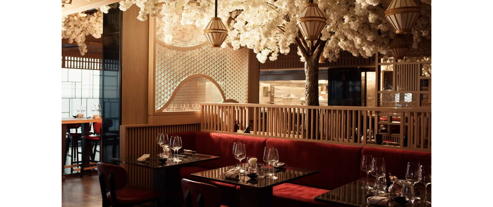

Incentive journeys
A reward that people talk about: top performers, dealers and distributors, on a sailing chosen for them.

From a board retreat for twelve to a ship that is yours for a week. We plan the event with the line, and with Explore Orient for everything ashore: one brief, one team, land and sea.
A ship is a venue, a hotel and a new city every morning, with nobody leaving early because the traffic is bad.
A reward that people talk about: top performers, dealers and distributors, on a sailing chosen for them.
C-level retreats and executive meetings away from the office, with private rooms and nobody else's agenda.
A confidential setting for a small group, with the meeting room and the dinner on the same deck.
Brand activations and launches to press, clients or dealers, with the ship's venues branded for the occasion.
Hosting the clients who matter, in suites, over dinners, with the ports as the programme.
A birthday, an anniversary, a family milestone. Suites on a normal sailing, the celebration arranged with the ship before you board, and no event planner needed on your side.
A block of suites on a scheduled departure. Right for incentives, celebrations and groups of a few to a few dozen. The ship's programme is yours to join; private venues and activities are arranged on top where the ship offers them.
A larger share of a scheduled sailing, with tailored activities, private venues and your branding, and a flow between business and leisure planned with the line.
The ship is yours: itinerary, ports, time in port, daily schedule, dining, events and branding, in a secure and confidential setting with nobody else on board.
Three lines, three scales: an all-suite ship built like a boutique hotel, a small ship with a butler for every suite, and some of the largest ships at sea.

MSC Group's luxury line runs meetings, incentives and full-ship charters as a service of its own, with a dedicated team before, during and after the sailing.
Source: Explora Journeys, Meetings, Incentives & Charters, as published on 28 September 2026.

Small, yacht-like ships where every suite has an ocean view and a butler. Silversea takes anything from a limited number of suites for an exclusive incentive to a full-ship charter.
Source: Silversea, Charter & Incentives, as published on 28 September 2026.

When the group is counted in hundreds or thousands, the answer is a big ship. MSC Cruises is the world's largest privately held cruise company, and MSC World Europa, in service since 2022, takes up to 6,762 guests on 22 decks, with a crew of 2,138.
Source: Wikipedia, MSC Cruises and MSC World Europa, read on 28 September 2026. MSC's own meetings and events terms come with its proposal.
The ship is one venue. Explore Orient, Ambiente Group's MICE and DMC company, handles the rest: congress venues, hotels, transfers, gala dinners and programmes ashore before and after the sailing. A congress in Istanbul that ends with three nights on the Aegean, or an incentive that starts in Athens and sails to Kuşadası, is one brief to one team.
The line, the ship, the sailing or the charter, the cabins, the venues on board and the event order.
The congress, the hotel nights, the transfers, the evenings ashore and the ground programme. exploreorient.com
How many people, which dates or season, what the event is for, and roughly where. Tell us the passports in the group, too.
Line, ship and form: suites on a sailing, an allocation or a charter, with indicative prices and the visa position for every passport and port.
We take the chosen option to the line's charter and incentive team and bring back its proposal: space, venues, inclusions and terms.
Every session, dinner, excursion and piece of AV written down and agreed, so the crew on board runs exactly what was planned.
The same planner, from the first call to the last evening, with Explore Orient on the ground in port.
A note on visas for groups: any Greek, Italian, Spanish or French port puts the whole sailing under Schengen rules, even from Istanbul. We check every passport in the group against every port before anyone commits.